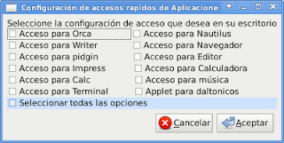

Desarrollo de interfaz gráfica para la configuración de accesos rápidos de teclado para gconf
Posted on lun 21 diciembre 2009 in Tutorial Python • 3 min read
En el anterior artículo se mostró el desarrollo de una aplicación en python que configura vía línea de comandos los accesos rápidos de teclado para gnome por medio de gconf.
La interfáz gráfica de la aplicación la pueden bajar del siguiente enlace , el código python de la aplicación lo pueden bajar acá y el módulo configGconf.py.
La interfaz gráfica fue creada con glade usando gtkbuilder en vez de libglade, esa es una de las diferencias principales con otros desarrollos gráficos mostrados en este blog. La interfaz tiene varios botones de verificación para seleccionar cuales opciones de teclas rápidas se quieren configurar.
La siguiente figura muestra la interfaz desarrollada con glade.

A continuación el código fuente de la aplicación:
```python
!/usr/bin/env python
-- coding: utf-8 --
""" Name: pyconfig-accessgnome-uy Description: Aplicación gráfica que permite configurar los accesos rápidos de teclado a gconf Version:0.1 License: GPLv3 Copyright: Copyright (C) 2009 Libre Accesibilidad Author: Ernesto Nadir Crespo Avila Email: ecrespo@gmail.com
"""
Importar módulo gtk y el módulo de cambios de opciones de teclado
import gtk,configGconf
Clse AccessGnomeCOnfig
class AccessGnomeConfig: def init(self):
#Uso de la interfaz desarrollada con gtkbuilder y llamado del mismo.
self.glade_file = "ui.glade" self.glade = gtk.Builder() self.glade.add_from_file(self.glade_file) # Asociación de todos los widgets self.window = self.glade.get_object('dialog1') self.button1 = self.glade.get_object('button1') self.button2 = self.glade.get_object('button2') self.checkbutton1 = self.glade.get_object('checkbutton1') self.checkbutton2 = self.glade.get_object('checkbutton2') self.checkbutton3 = self.glade.get_object('checkbutton3') self.checkbutton4 = self.glade.get_object('checkbutton4') self.checkbutton5 = self.glade.get_object('checkbutton5') self.checkbutton6 = self.glade.get_object('checkbutton6') self.checkbutton7 = self.glade.get_object('checkbutton7') self.checkbutton8 = self.glade.get_object('checkbutton8') self.checkbutton9 = self.glade.get_object('checkbutton9') self.checkbutton10 = self.glade.get_object('checkbutton10') self.checkbutton11 = self.glade.get_object('checkbutton11') self.checkbutton12 = self.glade.get_object('checkbutton12') self.checkbutton13 = self.glade.get_object('checkbutton13') self.aplicaciones = []
# asociar las señales de los widgets con los métodos de la clase self.window.connect ("close",self.on_dialog1_close) self.window.connect("destroy",self.on_dialog1_destroy) self.button1.connect ("clicked",self.on_button1_clicked) self.button2.connect ("clicked",self.on_button2_clicked) self.checkbutton1.connect("toggled",self.on_checkbutton1_toggled) self.checkbutton2.connect("toggled",self.on_checkbutton2_toggled) self.checkbutton3.connect("toggled",self.on_checkbutton3_toggled) self.checkbutton4.connect("toggled",self.on_checkbutton4_toggled) self.checkbutton5.connect("toggled",self.on_checkbutton5_toggled) self.checkbutton6.connect("toggled",self.on_checkbutton6_toggled) self.checkbutton7.connect("toggled",self.on_checkbutton7_toggled) self.checkbutton8.connect("toggled",self.on_checkbutton8_toggled) self.checkbutton9.connect("toggled",self.on_checkbutton9_toggled) self.checkbutton10.connect("toggled",self.on_checkbutton10_toggled) self.checkbutton11.connect("toggled",self.on_checkbutton11_toggled) self.checkbutton12.connect("toggled",self.on_checkbutton12_toggled) self.checkbutton13.connect("toggled",self.on_checkbutton13_toggled) #Configuración del widget ventana, agregandole un título. self.window.set_title("Configuración de accesos rapidos de Aplicaciones en Gnome") self.window.show_all() #Métodos de utilización de los botones de verificación cuando se selecciona o no. #Cuando se selecciona se agrega el elemento a una lista #Cuando se deselecciona se elimina el elemento de la lista. def on_checkbutton1_toggled(self,*args): variable = self.checkbutton1.get_active() if variable == True: self.aplicaciones.append("orca") else: self.__eliminacion("orca")
def on_checkbutton2_toggled(self,*args): variable = self.checkbutton2.get_active() if variable == True: self.aplicaciones.append("nautilus") else: self.__eliminacion("nautilus")
def on_checkbutton3_toggled(self,*args): variable = self.checkbutton3.get_active() if variable == True: self.aplicaciones.append("oowriter") else: self.__eliminacion("oowriter")
def on_checkbutton4_toggled(self,*args): variable = self.checkbutton4.get_active() if variable == True: self.aplicaciones.append("iceweasel") else: self.__eliminacion("iceweasel")
def on_checkbutton5_toggled(self,*args): variable = self.checkbutton5.get_active() if variable == True: self.aplicaciones.append("pidgin") else: self.__eliminacion("pidgin")
def on_checkbutton6_toggled(self,*args): variable = self.checkbutton6.get_active() if variable == True: self.aplicaciones.append("gedit") else: self.__eliminacion("gedit")
def on_checkbutton7_toggled(self,*args): variable = self.checkbutton7.get_active() if variable == True: self.aplicaciones.append("ooimpress") else: self.__eliminacion("ooimpress")
def on_checkbutton8_toggled(self,*args): variable = self.checkbutton8.get_active() if variable == True: self.aplicaciones.append("gnome-calculator") else: self.__eliminacion("gnome-calculator")
def on_checkbutton9_toggled(self,*args): variable = self.checkbutton9.get_active() if variable == True: self.aplicaciones.append("oocalc") else: self.__eliminacion("oocalc")
def on_checkbutton10_toggled(self,*args): variable = self.checkbutton10.get_active() if variable == True: self.aplicaciones.append("rhythmbox") else: self.__eliminacion("rhythmbox")
def on_checkbutton11_toggled(self,*args): variable = self.checkbutton11.get_active() if variable == True: self.aplicaciones.append("gnome-terminal") else: self.__eliminacion("gnome-terminal")
def on_checkbutton12_toggled(self,*args): pass """ variable = self.checkbutton12.get_active() if variable == True: print "daltonicos" else: print "nada de daltonicos" """ def __eliminacion(self,aplicacion): #Elimina un elemento de la lista if len(self.aplicaciones) >= 2: for i in range(len(self.aplicaciones)): if self.aplicaciones[i] == aplicacion: self.aplicaciones[i:i+1] = [] break else: continue elif len(self.aplicaciones) == 1: if self.aplicaciones[0] == aplicacion: self.aplicaciones = [] else: pass else: pass
def on_checkbutton13_toggled(self,*args): #Selecciona todos los botones de verificación o los deselecciona a todos. variable = self.checkbutton13.get_active() if variable == True: self.checkbutton1.set_active(1) self.checkbutton2.set_active(1) self.checkbutton3.set_active(1) self.checkbutton4.set_active(1) self.checkbutton5.set_active(1) self.checkbutton6.set_active(1) self.checkbutton7.set_active(1) self.checkbutton8.set_active(1) self.checkbutton9.set_active(1) self.checkbutton10.set_active(1) self.checkbutton11.set_active(1) #self.checkbutton12.set_active(1) else: self.checkbutton1.set_active(0) self.checkbutton2.set_active(0) self.checkbutton3.set_active(0) self.checkbutton4.set_active(0) self.checkbutton5.set_active(0) self.checkbutton6.set_active(0) self.checkbutton7.set_active(0) self.checkbutton8.set_active(0) self.checkbutton9.set_active(0) self.checkbutton10.set_active(0) self.checkbutton11.set_active(0) #self.checkbutton12.set_active(0)
def on_dialog1_close(self,*args): #Cierra la ventana de dialogo gtk.main_quit()
def on_dialog1_destroy(self,*args): #Cierra la ventana de dialogo gtk.main_quit()
def on_button1_clicked(self,*args): #Cierra la ventana de dialogo gtk.main_quit()
def on_button2_clicked(self,*args):
#Llama al módulo configGconf para aplicar los cambios con gconf
Config = configGconf.Conf()
Config.modificar_opcion(self.aplicaciones)
def main(self): #Método que ejecuta el programa gtk.main()
if name == "main": Instancia del objeto AccessGnomeConfig y ejecución del programa app = AccessGnomeConfig() app.main()
```
La opción de applet para daltónicos no está habilitada en este momento ya que se está trabajando en agregar el applet automaticamente a la barra superior de gnome por medio de gconf. La próxima mejora será eliminar configuraciones del gconf.
En próximo artículo se creará el paquete .tar.gz de python para subirlo al repositorio oficial de python y luego crear un paquete para debian.
===
¡Haz tu donativo! Si te gustó el artículo puedes realizar un donativo con Bitcoin (BTC) usando la billetera digital de tu preferencia a la siguiente dirección: 17MtNybhdkA9GV3UNS6BTwPcuhjXoPrSzV
O Escaneando el código QR desde billetera: